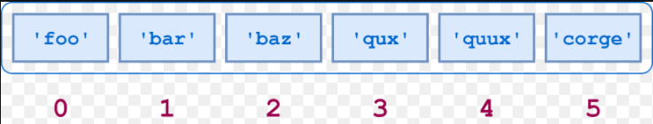
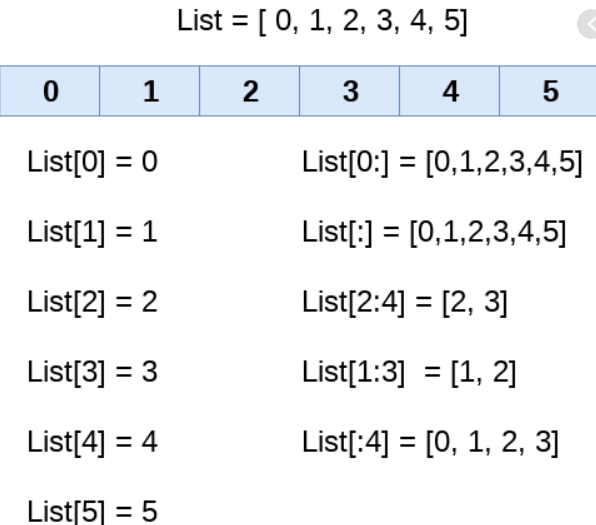
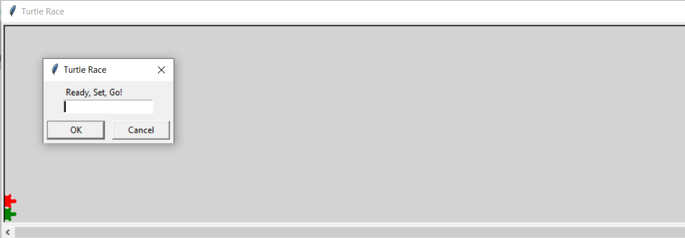
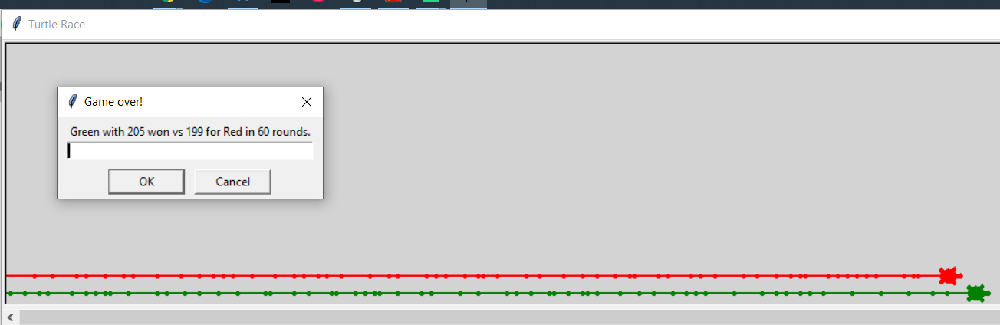

In this module, you will expand on your knowledge of data types to include composite data types, which can contain strings, numbers, booleans, all of which are basic data types. The composite data types you will learn about in this module will also include ranges, a data type often associated with For loops. Collectively, these data types are called sequences, which allow you to perform operations over elements in the sequence, such as items in a list.
Consider this list:

This list contains strings. The first element of the list, is at index (position) 0. To define and print the entire list, you could write:
name_list = ['foo','bar','baz','qux','quux','corge']
print(name_list)
for name in name_list:
print(name)
and the result of execution would display as
['foo', 'bar', 'baz', 'qux', 'quux', 'corge']
foo
bar
baz
qux
quux
corge
Lists are mutable, meaning you can change the contents of an element of the list without creating a new list:
name_list[0] = name_list[0].upper()
print(name_list[0])
In this example, foo is changed to FOO and is still at index 0.
Lists are very versatile, in part because of their mutability, but also because they allow mixing of data types in the same list–a list does not require its values to be of a homogenious data type–and allows duplicate values. As a consequence, lists less efficient than more restrictive data types but widely used.
Typically, you add an element to a list by appending it to the end of the list:
name_list.append('joe')
results in joe becoming the last element of the list.
**Note: **Although you can insert an element into the beginning of a list, appending to the list is more efficient because Python does not have to 'adjust' the location of elements in the list; however, because lists are ordered, it may be necessary to set the element at a specific relative location in the list, e.g. at the beginning via insert or end via append. You can also sort a list, which is a topic covered in another module.
Lists can hold any data type, including nesting other lists. The following example takes a string that contains the first sentence in Tale of Two Cities and splits it into a list of phrases. For each phrase in the list, the code breaks the string into a list in which each element contains a word in the phrase.
print_hi('PyCharm')
phrases = [] # everything up to a comma
words = [] # everything between whitespace
words_in_phrases = [] # all words in a phrase
# source is first paragraph of famous Charles Dickens novel
tale_of_two_cities = "It was the best of times, it was the worst of times, it was the age of wisdom, it was the age of foolishness, it was the epoch of belief, it was the epoch of incredulity, it was the season of Light, it was the season of Darkness, it was the spring of hope, it was the winter of despair, we had everything before us, we had nothing before us, we were all going direct to Heaven, we were all going direct the other way."
print("Source string:" )
print(tale_of_two_cities)
phrases = tale_of_two_cities.split(",")
print("Phrases as a list of comma-separated substrings:" )
print(phrases)
print("A phrase as a list of whitespace-separated words:" )
for a_phrase in phrases:
words = a_phrase.split()
print(words)
words_in_phrases.append(words)
print("A nested list of whitespace-separated words:" )
print(words_in_phrases)
It displays the following output in which the variable words_in_phrases is a list of lists:
Source string:
It was the best of times, it was the worst of times, it was the age of wisdom, it was the age of foolishness, it was the epoch of belief, it was the epoch of incredulity, it was the season of Light, it was the season of Darkness, it was the spring of hope, it was the winter of despair, we had everything before us, we had nothing before us, we were all going direct to Heaven, we were all going direct the other way.
Phrases as a list of comma-separated substrings:
['It was the best of times', ' it was the worst of times', ' it was the age of wisdom', ' it was the age of foolishness', ' it was the epoch of belief', ' it was the epoch of incredulity', ' it was the season of Light', ' it was the season of Darkness', ' it was the spring of hope', ' it was the winter of despair', ' we had everything before us', ' we had nothing before us', ' we were all going direct to Heaven', ' we were all going direct the other way.']
A phrase as a list of whitespace-separated words:
['It', 'was', 'the', 'best', 'of', 'times']
['it', 'was', 'the', 'worst', 'of', 'times']
['it', 'was', 'the', 'age', 'of', 'wisdom']
['it', 'was', 'the', 'age', 'of', 'foolishness']
['it', 'was', 'the', 'epoch', 'of', 'belief']
['it', 'was', 'the', 'epoch', 'of', 'incredulity']
['it', 'was', 'the', 'season', 'of', 'Light']
['it', 'was', 'the', 'season', 'of', 'Darkness']
['it', 'was', 'the', 'spring', 'of', 'hope']
['it', 'was', 'the', 'winter', 'of', 'despair']
['we', 'had', 'everything', 'before', 'us']
['we', 'had', 'nothing', 'before', 'us']
['we', 'were', 'all', 'going', 'direct', 'to', 'Heaven']
['we', 'were', 'all', 'going', 'direct', 'the', 'other', 'way.']
A nested list of whitespace-separated words:
[['It', 'was', 'the', 'best', 'of', 'times'], ['it', 'was', 'the', 'worst', 'of', 'times'], ['it', 'was', 'the', 'age', 'of', 'wisdom'], ['it', 'was', 'the', 'age', 'of', 'foolishness'], ['it', 'was', 'the', 'epoch', 'of', 'belief'], ['it', 'was', 'the', 'epoch', 'of', 'incredulity'], ['it', 'was', 'the', 'season', 'of', 'Light'], ['it', 'was', 'the', 'season', 'of', 'Darkness'], ['it', 'was', 'the', 'spring', 'of', 'hope'], ['it', 'was', 'the', 'winter', 'of', 'despair'], ['we', 'had', 'everything', 'before', 'us'], ['we', 'had', 'nothing', 'before', 'us'], ['we', 'were', 'all', 'going', 'direct', 'to', 'Heaven'], ['we', 'were', 'all', 'going', 'direct', 'the', 'other', 'way.']]
Strings and lists are very similar in the operations you can execute. A string is also a sequence and lists and strings share many built-in functions, including the ability to slice sequences in both kinds of data types. Here are some examples of slicing a list that contains integers from 0 to 5, inclusive: 
In this diagram, the index and the value are the same. On the right side of the diagram are various slicing operations. **Note: **This image is for illustrative purposes only. Do not name your list variable List.
This is a very brief introduction to lists. You will also want to review the Python lists section at w3schools.com as well as the List Methods.
A Pythonic feature, which does not directly exist in most programming languages, is a syntax called list comprehension. List comprehension syntax returns a new list from an action you specify over the contents of an existing sequence or iterable. (An iterable is an object that can return its values one at a time, such as elements of a list or other sequence.) Optionally, you can specify conditions for including the resulting values in the new list. Here’s an example that searches a list for leading spaces and places the corrected phrases in a new list:
new_list = [phrases[i].lstrip() for i in range(len(phrases)) if phrases[i].startswith(" ")]
List comprehensions can be nested and become quite complex; you should keep them easy to understand. For more information about list comprehensions, see Python - List Comprehension
Tuples (rhymes with couples) are very similar to lists, except they are immutable and cannot be changed after they have been created–the same as strings. They allow duplicate values. You can assign a tuple to a list and vice versa if you need to change a value in a tuple, but you might just want to use a list in the first place, if you need to add or modify values. Here is an example of creating and printing a tuple:
primes_tuple = (1,2,3,5,7,11) + (13,17)
print(primes_tuple)
print("primes_tuple at index " + str(primes_tuple.index(7)) + " contains a " + str(primes_tuple[primes_tuple.index(7)]))
The result is
(1, 2, 3, 5, 7, 11, 13, 17)
primes_tuple at index 4 contains a 7
You can also use slicing operations on tuples. For more information about tuples, see Python Tuples.
You’ve seen ranges before. Typically, a range provides an index into a collection, such as a string of characters, a list, tuple, or a set. Consider this example:
s = [0,"P",2,"y",4,"t",6,"h",8,"o",10,"n"]
data = []
total = 0
for i in range(1,len(s),2):
# find every other character from the 2nd character to the end of the string
data.append(s[i])
total += s[i-1]
You can also assign a range to a variable, as in the following example:
my_range = range(1,10,3)
for i in my_range:
print(str(s[i]))
which prints P, 4, and h on separate lines. The advantage to assigning a range to a variable is to reuse it in different places without having to change the code if you change the range, or to dynamically set the range. If you do not assign the range to a variable, you can say that it is hardcoded, which is not always desirable, especially if you think the code with change. Keep alternatives to hardcoding in mind in other coding situations as well.
For more information about the range function, see Python range() Function. For information about For loops, see Python For Loops.
Create a new project called TurtleRace. You will find the source code for main.py in the files->TurtleRace folder. Replace the default code in main.py with the code from the folder, then run the race several times to see the action. You should see this screen when you execute the program: 
After the race completes, you will see the following screen: 
You do not really need to know about the turtle module that enables this graphic interface (with turtles!) or the random number generator so it is not discussed further here. You are interested in the main program:
if __name__ == '__main__':
print_hi('PyCharm')
# seed random number generator
seed(int(round(time.time() * 1000)))
race_over = False
finish_line = 200
rounds = 0
screen = turtle.Screen()
screen_setup(screen)
# create turtles
t1 = turtle.Turtle()
t1_id = init_turtle(t1, 0, "green", 1)
t1_total = 0
t2 = turtle.Turtle()
t2_id = init_turtle(t2, 0, "red", 2)
t2_total = 0
# loop
screen.update()
screen.textinput("Turtle Race", "Ready, Set, Go!")
while not race_over:
rounds += 1
# t1 turn
move1 = randint(1, 6)
t1_id = turn(t1, t1_id, move1)
screen.update()
# t2 turn
move2 = randint(1, 6)
t2_id = turn(t2, t2_id, move2)
screen.update()
# calculate position
t1_total += move1
t2_total += move2
if t1_total >= finish_line or t2_total >= finish_line:
race_over = True
if t1_total >= finish_line and t2_total >= finish_line:
result = "Tie in " + str(rounds) + " rounds."
elif t1_total >= finish_line:
result = "Green with " + str(t1_total) + " won vs " + str(t2_total) + " for Red in " + str(
rounds) + " rounds."
else:
result = "Red with " + str(t2_total) + " won vs " + str(t1_total) + " for Green in " + str(
rounds) + " rounds."
screen.textinput("Game over!", result)
exit()
It creates a pair of turtles, t1 and t2, and has several additonal pairs of variables, one for each turtle: t1_id and t2_id, move1 and move2, t1_total, t2_total. Because of this organization, it is less than ideal to add more turtles to the race.
Your initial assignment is two-fold:
After you test and verify that it works:
As a stretch goal, display a statistic for each turtle that shows the average move size during the race.